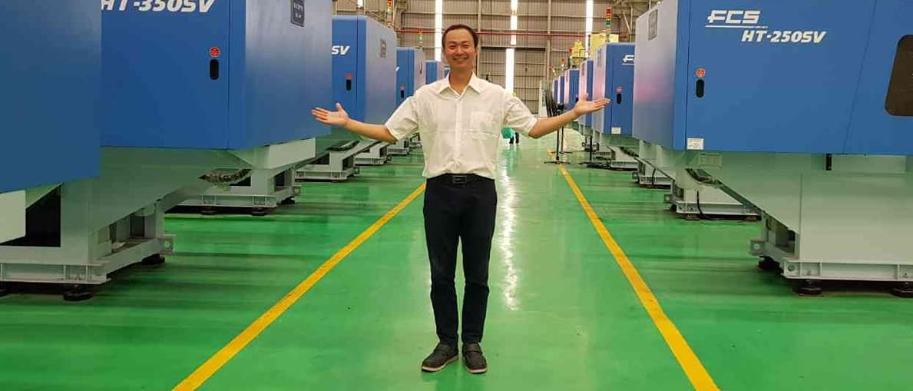
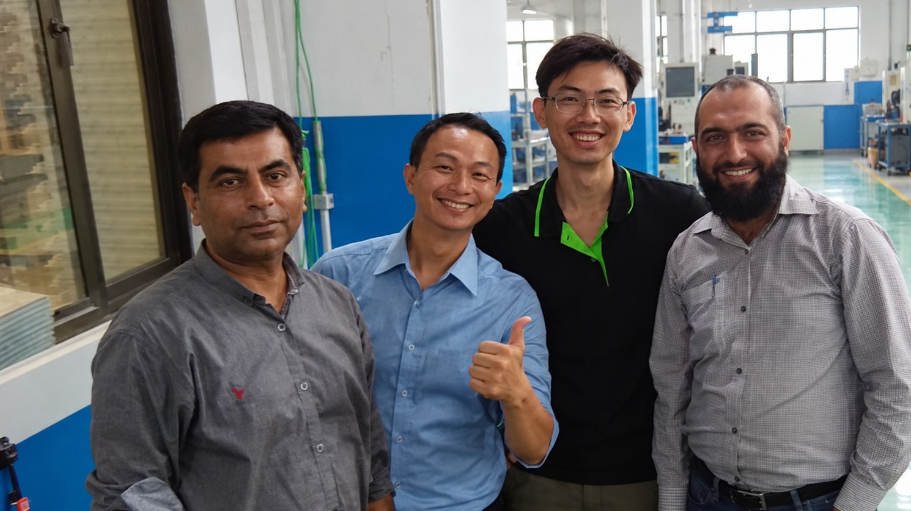
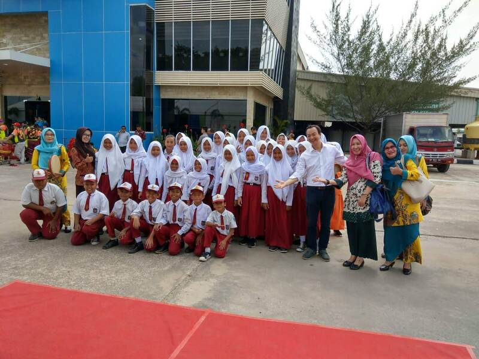
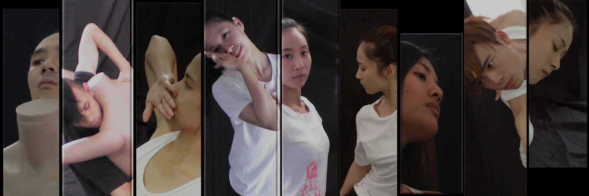
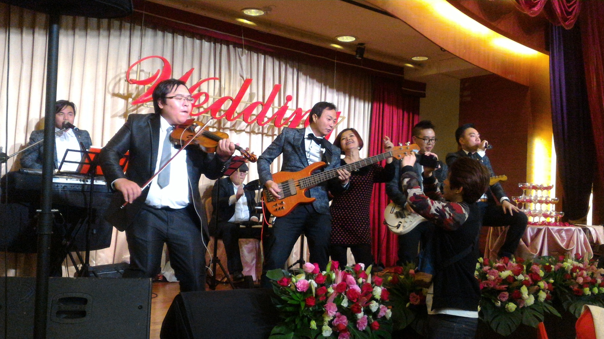

屋頂發電系統建置與監看
綠能・太陽能監看主導屋頂太陽能光電發電系統 1-6 期建置與維護作業，打造即時發電數據統計、設備狀態異常警告與太陽能遠端監看維護系統。
細節專注於嵌入式系統開發、自動控制、介面設計與資料庫架構。秉持實務累積經驗的精神，分享極致除錯經驗與創新靈感專案。
Senior Software Engineer & System Architect

開發工業射出成型機 (Injection Molding Machine) 監看系統，跨國遠端連線控制與維護超過 300 台射出機台。
台灣・中國・越南・泰國・印尼・巴西・巴基斯坦
檢視經歷與細節

主導屋頂太陽能光電發電系統 1-6 期建置與維護作業，打造即時發電數據統計、設備狀態異常警告與太陽能遠端監看維護系統。
細節設計「小綠人」交通號誌 (行人燈) 微控制器控制電路，並完成先鋒牌 (Pioneer) 錄影機與索尼 (SONY) 電源供應器之電磁干擾 (EMI Debugging) 與電磁相容 (EMC) 測試除錯實戰作品。
細節「AI 不是萬能神，用真實案例警惕 AI 盲點與幻覺。」記錄資深工程師與 AI 對話寫 Code 時，AI 犯下的幻覺杜撰、路徑混淆、過度自信與邏輯漏洞案例。
前往（需密碼）「讓每一個想法，都留下它的人生。」點子檔案庫與靈感博物館，保存曾經想到、正在實現，以及因拖延而錯過的創意與故事。
前往（需密碼）
「禮歐先生的識(視)覺網站。」收錄攝影作品、視覺紀錄、生活隨筆與視覺設計，記錄日常生活與工程師視角之外的獨特影像觀點與創作。
前往 LEO'S VIEW
「來自台南的超級樂團 - JOIN THE ANGEL PARTY。」一生中最重要的大日子，Full Band 現場帶來的熱情與能量，震撼演唱會級音效與活動/婚禮紀錄。
前往天使派對樂團微控制器韌體開發、即時作業系統 (RTOS)、底層驅動與通訊協定整合。
人機介面 (HMI) 開發、使用者體驗優化、現代化網頁與控制介面。
工業自動化、運動控制系統、伺服驅動與感測器訊號處理。
C/C++、Java、ASP.NET、Python 與現代全棧網頁程式語言。
越是沒有天資的地方我能選擇的只有努力。一切都是苦功夫，一點一滴累積下來的經驗與運氣。
或許命運帶著我們走入了複雜的生命程式陣營。受到許多工程師先進的影響，想要讓自己思考能力變強、變得更有格局、更有邏輯，於是走上了這條寫程式的不歸路。
一個人的力量有限，在此提供一些資源與大家一起分享，希望有機會能跟各位交流成長！
前往此資源項目需要存取密碼驗證。